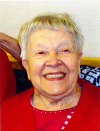

Karen Olsdatter
K, #2576, f. 1855
Biografi
Karen Olsdatter ble født i 1855 på/i Holmedal, Fjaler, Sogn og Fjordane. Hun giftet seg med
Søren Torgersen.
Karen Olsdatter was also known as Karen Torgersen.
| Sist redigert |
1 desember 2010 00:00:00 |
Sabine Mathea Torgersen
K, #2577, f. 1855
Foreldre
Biografi
Sabine Mathea Torgersen ble født i 1855 på/i Skedsmo, Akershus.
| Sist redigert |
1 desember 2010 00:00:00 |
Nilla Talette Torgersen
K, #2578, f. 1862
Foreldre
Biografi
Nilla Talette Torgersen ble født i 1862 på/i Skedsmo, Akershus.
| Sist redigert |
1 desember 2010 00:00:00 |
Johanne Torgersen
K, #2579, f. 1870
Foreldre
Biografi
Johanne Torgersen ble født i 1870.
| Sist redigert |
1 desember 2010 00:00:00 |
Søren Stubberud
M, #2580, f. før 1800
Biografi
Søren Stubberud ble født før 1800.
| Sist redigert |
1 desember 2010 00:00:00 |
Gunnar Ødegaard
M, #2581, f. 3 november 1903, d. 12 juni 1980
Foreldre
Familie: Else Barhaugen (f. 9 oktober 1907, d. 16 desember 1999)
| Datter | Esther Gerd Ødegaard+ |
| Sønn | Odd Arne Ødegaard+ |
Biografi
Gunnar Ødegaard ble født den 3 november 1903 på/i Fet, Akershus. Han giftet seg med
Else Barhaugen. Han døde den 12 juni 1980 på/i Fet, Akershus.
| Sist redigert |
1 desember 2010 00:00:00 |
Else Barhaugen
K, #2582, f. 9 oktober 1907, d. 16 desember 1999
Foreldre
Familie: Gunnar Ødegaard (f. 3 november 1903, d. 12 juni 1980)
| Datter | Esther Gerd Ødegaard+ |
| Sønn | Odd Arne Ødegaard+ |
Biografi
Else Barhaugen ble født den 9 oktober 1907 på/i Lalm, Vågå, Oppland. Hun giftet seg med
Gunnar Ødegaard. Hun døde den 16 desember 1999 på/i Pålsetunet Bo og Servicessenter, Fet, Akershus. Hun ble gravlagt den 22 desember 1999 på/i Fet kirke, Fet, Akershus.
Else Barhaugen was also known as Else Ødegaard.
| Sist redigert |
19 august 2024 10:21:24 |
Oskar Fjellvang
M, #2589, f. 8 april 1912, d. 1 februar 1984
Foreldre
Familie: Gunvor Synnøve Hagen (f. 11 februar 1917, d. 3 august 2013)
| Datter | Grethe Fjellvang+ |
| Datter | Anne-Karin Fjellvang+ |
Biografi
Oskar Fjellvang ble født den 8 april 1912 på/i Fjellhamar, Lørenskog, Akershus. Han giftet seg med
Gunvor Synnøve Hagen den 11 juni 1938 på/i Strømmen kirke, Strømmen, Skedsmo, Akershus. Han døde den 1 februar 1984 på/i Strømmen, Skedsmo, Akershus. Han ble gravlagt den 7 februar 1984 på/i Stalsberghagen gravlund, Skedsmo, Akershus.
| Sist redigert |
1 desember 2010 00:00:00 |
Gunvor Synnøve Hagen
K, #2590, f. 11 februar 1917, d. 3 august 2013
Foreldre
| Far | Edvin Hagen (f. 6 januar 1892, d. 1 februar 1956) |
| Mor | Anne Rudi (f. 10 februar 1894, d. 2 mai 1973) |
Familie: Oskar Fjellvang (f. 8 april 1912, d. 1 februar 1984)
| Datter | Grethe Fjellvang+ |
| Datter | Anne-Karin Fjellvang+ |

Gunvor Fjellvang
Biografi
Gunvor Synnøve Hagen ble født den 11 februar 1917 på/i Hamar, Hedmark. Hun giftet seg med
Oskar Fjellvang den 11 juni 1938 på/i Strømmen kirke, Strømmen, Skedsmo, Akershus. Hun døde den 3 august 2013 på/i Stalsberg bo- og behandlingssenter, Strømmen, Skedsmo, Akershus.
Gunvor Synnøve Hagen was also known as Gunvor Synnøve Fjellvang. Hun ble bisatt den 16 august 2013 Stalsberghagen lille kapell, Skedsmo, Akershus.
| Sist redigert |
16 august 2013 00:00:00 |
Kjell Opperud
M, #2592, f. 9 mai 1934, d. 30 mars 2018
Familie: Grethe Fjellvang
Biografi
Kjell Opperud ble født den 9 mai 1934 på/i Drammen, Buskerud. Han giftet seg med Grethe Fjellvang den 22 juni 1963 på/i Strømmen kirke, Strømmen, Skedsmo, Akershus. Han døde i hjemmet den 30 mars 2018 på/i Strømmen, Skedsmo, Akershus.
Kjell Opperud ble bisatt den 13 april 2018 Stalsberghagen store kapell, Skedsmo, Akershus.
| Sist redigert |
16 juli 2022 22:30:49 |
Anders Syversen Barhaugen
M, #2594, f. 11 desember 1874, d. 26 oktober 1959
Biografi
Anders Syversen Barhaugen ble født den 11 desember 1874. Han giftet seg med
Oline Hansdatter Sørlien. Han døde den 26 oktober 1959. Han ble gravlagt på/i Vågå kirkegård, Vågå, Oppland.
| Sist redigert |
1 desember 2010 00:00:00 |
Oline Hansdatter Sørlien
K, #2595, f. 1 mars 1876, d. 30 januar 1961
Foreldre
Biografi
Oline Hansdatter Sørlien ble født den 1 mars 1876. Hun giftet seg med
Anders Syversen Barhaugen. Hun døde den 30 januar 1961. Hun ble gravlagt på/i Vågå kirkegård, Vågå, Oppland.
Oline Hansdatter Sørlien was also known as Oline Barhaugen.
| Sist redigert |
1 desember 2010 00:00:00 |
Mari Barhaugen
K, #2596, f. 16 oktober 1898, d. 17 oktober 1979
Foreldre
Familie: Karl Tofsrud (f. 23 juli 1881, d. 19 januar 1976)
| Sønn | Einar Tofsrud+ |
| Datter | Synnøve Tofsrud+ |
| Datter | Kirsten Tofsrud+ |
Biografi
Mari Barhaugen ble født den 16 oktober 1898. Hun giftet seg med
Karl Tofsrud i 1930. Hun døde den 17 oktober 1979.
Mari Barhaugen was also known as Mari Tofsrud.
| Sist redigert |
2 desember 2010 00:00:00 |
Karl Tofsrud
M, #2597, f. 23 juli 1881, d. 19 januar 1976
Familie: Mari Barhaugen (f. 16 oktober 1898, d. 17 oktober 1979)
| Sønn | Einar Tofsrud+ |
| Datter | Synnøve Tofsrud+ |
| Datter | Kirsten Tofsrud+ |
Biografi
Karl Tofsrud ble født den 23 juli 1881. Han giftet seg med
Mari Barhaugen i 1930. Han døde den 19 januar 1976.
| Sist redigert |
2 desember 2010 00:00:00 |
Kristine Barhaugen
K, #2598, f. 6 mars 1901, d. 4 mars 1949
Foreldre
Biografi
Kristine Barhaugen ble født den 6 mars 1901. Hun giftet seg med
Anton Brusveen. Hun døde den 4 mars 1949.
Kristine Barhaugen was also known as Kristine Brusveen.
| Sist redigert |
2 desember 2010 00:00:00 |
Anton Brusveen
M, #2599, f. 18 mars 1897, d. 20 mai 1966
Biografi
Anton Brusveen ble født den 18 mars 1897. Han giftet seg med
Kristine Barhaugen. Han døde den 20 mai 1966.
| Sist redigert |
2 desember 2010 00:00:00 |
Anders Barhaugen
M, #2600, f. 13 juni 1903, d. 14 februar 1964
Foreldre
Biografi
Anders Barhaugen ble født den 13 juni 1903. Han giftet seg med
Mathea Volden i 1926. Han døde den 14 februar 1964. Han ble gravlagt på/i Vågå kirkegård, Vågå, Oppland.
| Sist redigert |
1 desember 2010 00:00:00 |

{kind=link}